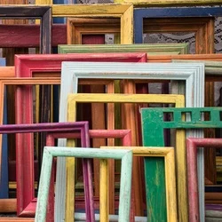

Made of the highest quality oak, Hacksaw
brushes are known for their weight and ability
to hold paint in large amounts. Available
in different sizes.
Starting at $3.00 / brush.
Frames

Art Frames (assorted)
Assorted frames made of different
material, including MDF, birchwood,
and PDE. Select frames can be sanded
and painted according to your needs.
Starting at $2.00 / frame.
Paints
Art Frames (assorted)
Assorted frames made of different
material, including MDF, birchwood,
and PDE. Select frames can be sanded
and painted according to your needs.
Starting at $2.00 / frame.